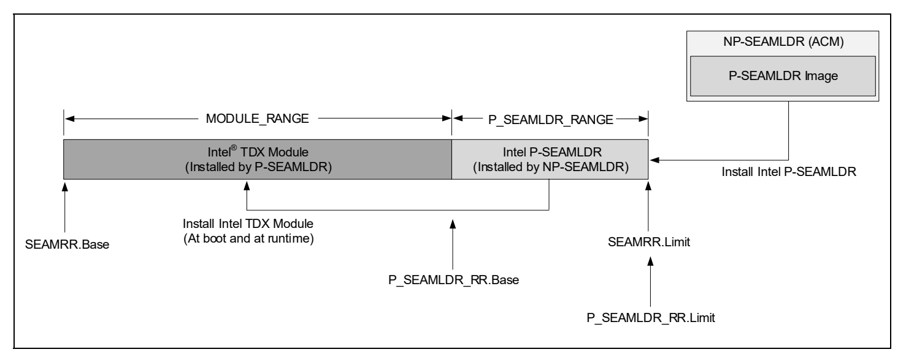
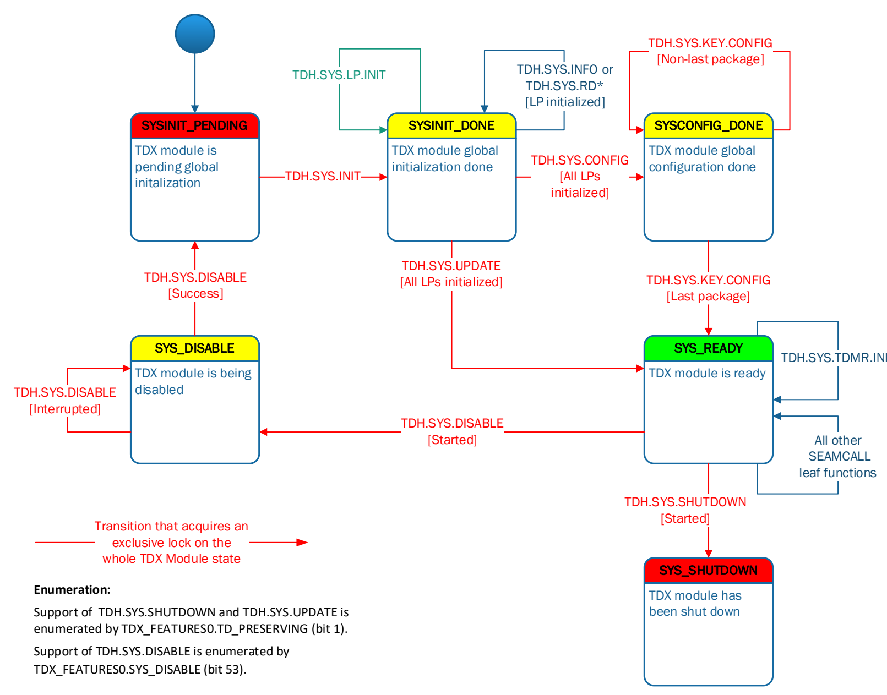
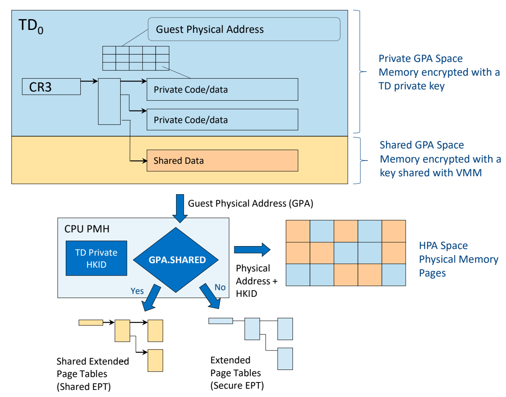
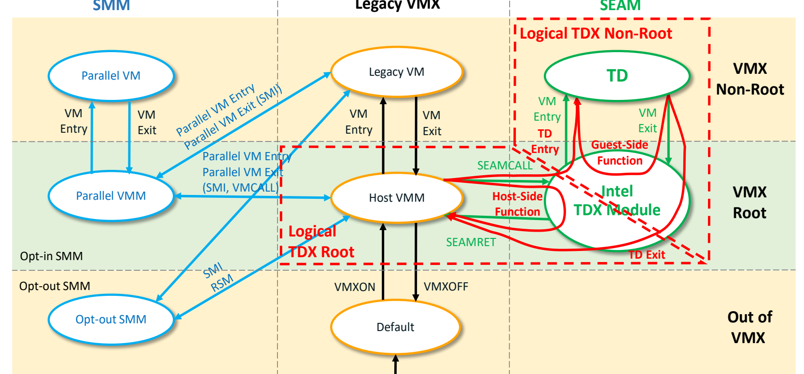
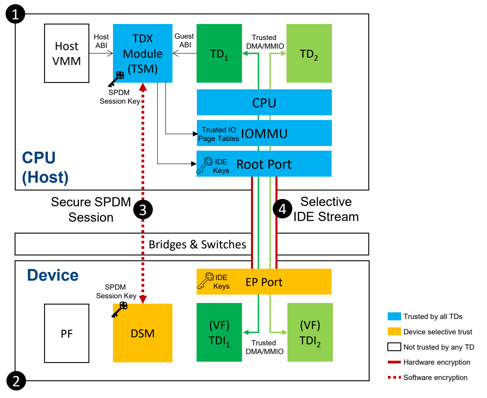
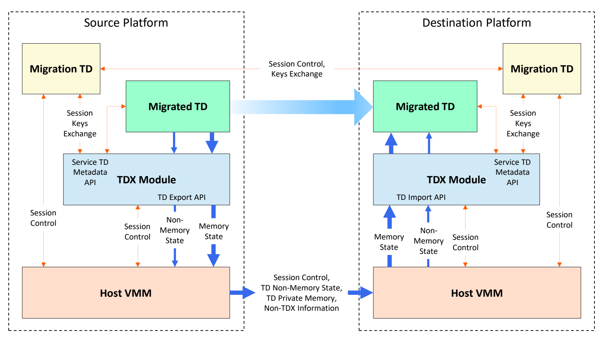
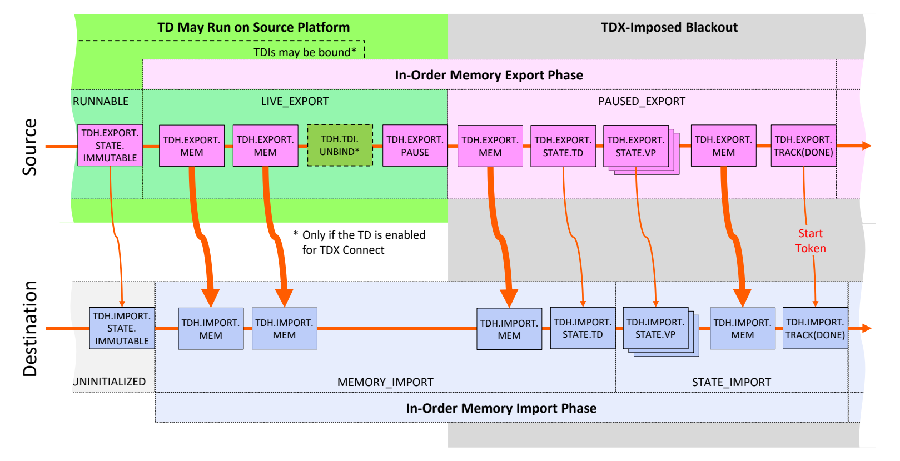

Check the exact Xeon SKU
TDX host support begins with selected 4th Gen Intel Xeon Scalable processors and continues on selected later server platforms. Generation alone is not a support guarantee.
Follow the TDX module in SEAM, private memory translation, and the distinct calls made by a host VMM and a guest Trust Domain.
A TDX-aware VMM supplies resources and schedules vCPUs. The Intel TDX module runs in SEAM root and enforces TD isolation using CPU virtualization, protected memory mappings and private KeyIDs.

Confirm the actual processor, firmware settings, TDX module, host KVM and guest capabilities separately.
TDX host support begins with selected 4th Gen Intel Xeon Scalable processors and continues on selected later server platforms. Generation alone is not a support guarantee.
BIOS/UEFI must enable TDX and configure SEAM, SEAMRR and private KeyIDs. A compatible Intel TDX module must be loaded before the host can create TDs.
The Linux host must initialize TDX; KVM and the VMM then provide the userspace VM creation path. Feature availability also depends on kernel and module ABI versions.
A TD guest handles private/shared memory transitions, accepts pages when required, and uses TDCALL for TDX module services or host-assisted operations.
Start with Intel’s TDX processor support note and the Linux TDX host guide.

The Non-Persistent SEAM Loader is an Authenticated Code Module (ACM). It installs the Persistent SEAM Loader, which accepts SEAMLDR.INSTALL via SEAMCALL. P-SEAMLDR checks the signed module information, measures the loaded image and records its identity for attestation. This measurement identifies the platform module.

The host calls TDH.SYS.INIT, initializes each logical processor with TDH.SYS.LP.INIT, configures the TDMRs and PAMT with TDH.SYS.CONFIG, and configures the global key on each package. TDH.SYS.TDMR.INIT initializes the associated PAMT ranges before the memory can back TD private pages.
SEAM, KeyIDs, Secure EPT and PAMT work together. Shared pages are an explicit exception.
Host cannot directly obtain private plaintext
Guest validates data crossing this boundary

The leaf name tells you which side requested the operation and what state transition it needs.
| Caller / instruction | Leaf or operation | Role in the flow |
|---|---|---|
Host VMM · SEAMCALL | TDH.MNG.CREATE | Create the TD root control structure (TDR). |
Host VMM · SEAMCALL | TDH.MNG.INIT | Initialize TD-wide configuration. |
Host VMM · SEAMCALL | TDH.MEM.PAGE.ADD | Add an initial private page to the TD. |
Host VMM · SEAMCALL | TDH.VP.ENTER | Enter or resume a TD virtual processor. |
Guest TD · TDCALL | TDG.VP.INFO | Query TD and virtual-processor information. |
Guest TD · TDCALL | TDG.MEM.PAGE.ACCEPT | Accept a pending private page before use. |
Guest TD · TDCALL | TDG.VP.VMCALL | Request host VMM service; often called TDVMCALL. |
Guest TD · TDCALL | TDG.MR.REPORT | Generate a local TD report for the quote generation flow. |
SEAMCALL and TDCALL are CPU instructions; the TDH.* and TDG.* names are TDX module API leaves. TDVMCALL is the TDG.VP.VMCALL leaf, not a third instruction. Verify operands, status codes and version-specific behavior in Intel’s TDX module ABI specification.

Keep the userspace KVM interface, module ABI and guest interface as three layers.
The Linux KVM TDX guide documents the userspace ioctl layer; it is distinct from the SEAMCALL ABI.
| Field | How to read it |
|---|---|
MRSEAM | Identity measurement of the loaded TDX module in TEE_TCB_INFO. |
MRTD | Build digest over the recorded initial TD layout and explicitly extended contents. |
RTMR[0..3] | Four SHA-384 registers the guest can extend via TDG.MR.RTMR.EXTEND. Firmware and guest software can measure boot events and record them in an event log for replay by a verifier. |
REPORTDATA | 64 bytes provided by the guest when requesting a report. A protocol can use them to bind a challenge and the guest’s public key to the evidence. |

Read the private/shared split before placing secrets or trusting virtual devices.
CPU, module and memory metadata protect private guest pages and TD state from direct host access. The host still controls scheduling and supplies virtual devices.
Guest-shared pages, emulated I/O and VMM responses are untrusted inputs. TDX does not by itself guarantee availability or eliminate timing and microarchitectural side channels.
Base TDX protects the VM’s private CPU and memory state. Conventional I/O often uses shared buffers, with software copying or encrypting sensitive data as needed. TDX Connect extends the TD’s trust boundary to a specifically accepted PCIe device function and lets it access authorized private buffers directly.

| Layer | What it does | Where it runs |
|---|---|---|
| PCIe DOE | Data Object Exchange provides a mailbox for control messages. | PCIe configuration space. The VMM can relay mailbox traffic. |
| DMTF SPDM | Authenticates the device, retrieves measurements and establishes a secure session for management messages. | Between the TEE Security Manager (TSM) and the device security manager (DSM). |
| PCI-SIG TDISP | Locks, reports, starts and stops an individual TEE Device Interface (TDI). | TSM and DSM exchange TDISP messages inside the SPDM secure session. |
| PCIe IDE / IDE_KM | Selective IDE protects the confidentiality and integrity of PCIe transaction packets and guards against replay. IDE_KM provisions stream keys. | IDE protects traffic between the Root Port and the endpoint. IDE_KM messages use the SPDM session. |
| Intel VT-d / IOMMU | Translates and restricts trusted DMA to the pages authorized for the assigned TDI. | The TDX module controls trusted mappings. The host manages ordinary shared I/O mappings. |
LOCK_INTERFACE_REQUEST freezes security-relevant configuration. GET_DEVICE_INTERFACE_REPORT retrieves the locked interface configuration, including its MMIO ranges. The TD evaluates that report and the SPDM evidence against its policy.START_INTERFACE_REQUEST puts the interface in RUN. The device can DMA to permitted TD private pages, and the TD can access the assigned device registers through trusted MMIO.STOP_INTERFACE_REQUEST quiesces the interface and drains outstanding traffic. The platform revokes trusted MMIO and DMA access and invalidates cached I/O translations before reusing resources.A capable SR-IOV device can expose several Virtual Functions (VFs). Each assigned TDI belongs exclusively to one TD at a time. After accepting its VF, the TD can submit work via MMIO, and the VF can DMA into authorized private buffers. The device’s firmware and isolation between functions now matter to the TD’s security.
Check the exact server SKU and firmware, Root Port and trusted VT-d support, the TDX module, the host kernel and VMM, guest drivers, and endpoint firmware with DOE, SPDM, Selective IDE and TDISP. The VMM can still withhold or revoke a device, so availability remains under host control.
Intel lists TEE I/O as a TDX 2.0 extension. Its September 2026 Connect ABI (2.1 V0.66) is a community review draft. In that draft, the VMM calls TDH.TDI.BIND via SEAMCALL, while the guest uses TDCALL leaves such as TDG.TDI.RD to retrieve evidence hashes and TDG.TDI.START to authorize the same bind instance. GHCI 2.0 describes the guest–VMM message layer. These interfaces are versioned, so check the ABI for the target stack.
PCI-SIG also published an Extended TEE (XT) ECN for PCIe 6.3 that adds rules for IDE and Address Translation Services (ATS). Check XT separately from baseline TDISP support.
A Service TD is a separate Trust Domain with a module-enforced relationship to the target. Migration TD (MigTD) is the service type described in the current base architecture.

TDH.SERVTD.PREBIND to record an expected service measurement, type and attributes in a slot in the target TD’s TDCS. The service instance can be attached later.TDH.SERVTD.BIND checks the applicable binding parameters and returns a handle. The target’s SERVTD_HASH reflects the service binding configuration for attestation.TDG.SERVTD.RD or TDG.SERVTD.WR. The binding authorizes selected target metadata fields.A local report binds TD measurements to data supplied by the guest. A quoting component produces evidence a remote verifier can authenticate and evaluate.

| Stage | Actor and security check |
|---|---|
| Challenge and report | The attester puts a protocol-defined challenge or challenge/key digest into REPORTDATA and calls TDG.MR.REPORT. The module returns a platform-local TDREPORT authenticated by a hardware-backed MAC. |
| Quote generation | In the DCAP path in the figure, the guest submits its report to the host Quote Generation Service (QGS). The local TD Quoting Enclave (TDQE) verifies the report and produces an ECDSA-signed quote. The guest–host transport depends on the implementation. |
| Remote verification | The verifier checks the quote signature and certification chain using Intel collateral such as PCK certificates, revocation lists, TCB Info and QE Identity. It checks freshness and any key binding through REPORTDATA, then evaluates module TCB, TD measurements and attributes against its own policy. |
Intel also describes Security Engine-backed attestation and Quoting TD on supported platforms. The platform and deployment determine which quoting path and evidence format are available.
MigTD handles trust policy and key exchange. The source and destination modules protect private state during export and import. The host VMMs orchestrate the session and transport migration bundles.

TDH.EXPORT.* and TDH.IMPORT.* calls for metadata and memory. Live migration can export memory while the source runs. After the source pauses, the module exports the final non-memory state and issues a start token at the end of the in-order phase.TDH.IMPORT.COMMIT can permit execution before all remaining memory arrives. The session state and tokens constrain when either side can run and govern whether an abort can return control to the source.

Compare page ownership, startup and trust chains, attestation, trusted I/O and migration.